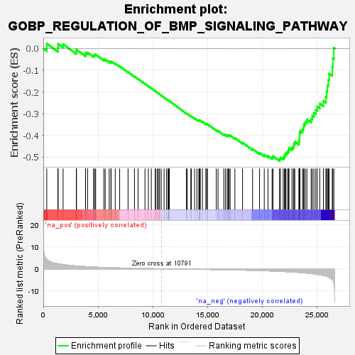
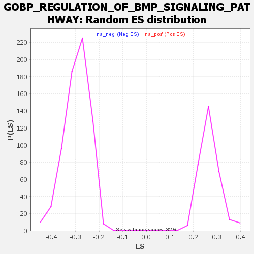

| | | Dataset | wbh_treatment_res_for_gsea |
| Phenotype | NoPhenotypeAvailable |
| Upregulated in class | na_neg |
| GeneSet | GOBP_REGULATION_OF_BMP_SIGNALING_PATHWAY |
| Enrichment Score (ES) | -0.5172331 |
| Normalized Enrichment Score (NES) | -1.7545534 |
| Nominal p-value | 0.0 |
| FDR q-value | 0.12263612 |
| FWER p-Value | 0.94 |
Table: GSEA Results Summary

Fig 1: Enrichment plot: GOBP_REGULATION_OF_BMP_SIGNALING_PATHWAY
Profile of the Running ES Score & Positions of GeneSet Members on the Rank Ordered List
| SYMBOL | RANK IN GENE LIST | RANK METRIC SCORE | RUNNING ES | CORE ENRICHMENT | | 1 | SKI | 315 | 4.264 | 0.0232 | No |
| 2 | XIAP | 1331 | 2.298 | 0.0038 | No |
| 3 | FBXL15 | 1352 | 2.277 | 0.0218 | No |
| 4 | NOTCH1 | 1806 | 1.905 | 0.0204 | No |
| 5 | MIR93 | 3014 | 1.284 | -0.0146 | No |
| 6 | NUMA1 | 3026 | 1.279 | -0.0045 | No |
| 7 | ABL1 | 3851 | 0.997 | -0.0274 | No |
| 8 | ACVRL1 | 3852 | 0.997 | -0.0191 | No |
| 9 | FST | 4038 | 0.937 | -0.0184 | No |
| 10 | TMEM53 | 4582 | 0.790 | -0.0324 | No |
| 11 | MIR140 | 4675 | 0.769 | -0.0296 | No |
| 12 | MIR17 | 4775 | 0.748 | -0.0271 | No |
| 13 | HTRA1 | 5525 | 0.597 | -0.0505 | No |
| 14 | KCNQ1OT1 | 5647 | 0.573 | -0.0503 | No |
| 15 | BMPER | 6011 | 0.511 | -0.0598 | No |
| 16 | ENG | 6170 | 0.482 | -0.0618 | No |
| 17 | SCUBE3 | 6182 | 0.480 | -0.0583 | No |
| 18 | CRB2 | 6560 | 0.418 | -0.0691 | No |
| 19 | NOG | 6966 | 0.365 | -0.0814 | No |
| 20 | HIPK2 | 7730 | 0.267 | -0.1080 | No |
| 21 | MIR210 | 8316 | 0.204 | -0.1284 | No |
| 22 | SOSTDC1 | 8643 | 0.173 | -0.1393 | No |
| 23 | TNFAIP6 | 9274 | 0.114 | -0.1621 | No |
| 24 | SMAD7 | 9581 | 0.086 | -0.1730 | No |
| 25 | CHRDL1 | 9852 | 0.068 | -0.1826 | No |
| 26 | NOTCH2 | 10211 | 0.039 | -0.1958 | No |
| 27 | GDF3 | 10237 | 0.038 | -0.1965 | No |
| 28 | SMURF1 | 10393 | 0.029 | -0.2021 | No |
| 29 | UBE2D3 | 10503 | 0.019 | -0.2060 | No |
| 30 | PPARG | 10606 | 0.012 | -0.2098 | No |
| 31 | TMPRSS6 | 10754 | 0.003 | -0.2153 | No |
| 32 | CER1 | 11019 | -0.019 | -0.2251 | No |
| 33 | TOB1 | 11234 | -0.029 | -0.2330 | No |
| 34 | RBPMS2 | 11376 | -0.043 | -0.2379 | No |
| 35 | DAND5 | 11419 | -0.046 | -0.2391 | No |
| 36 | MIR98 | 11456 | -0.050 | -0.2401 | No |
| 37 | SORL1 | 11494 | -0.053 | -0.2410 | No |
| 38 | SKIL | 13056 | -0.146 | -0.2988 | No |
| 39 | FSTL5 | 13129 | -0.154 | -0.3002 | No |
| 40 | MIR106A | 13461 | -0.175 | -0.3113 | No |
| 41 | MIR100 | 13504 | -0.175 | -0.3114 | No |
| 42 | FOXD1 | 13801 | -0.184 | -0.3211 | No |
| 43 | DKK1 | 14012 | -0.204 | -0.3274 | No |
| 44 | BMPR2 | 14188 | -0.219 | -0.3322 | No |
| 45 | GDF2 | 14230 | -0.221 | -0.3319 | No |
| 46 | MIR20A | 14291 | -0.226 | -0.3323 | No |
| 47 | HJV | 14316 | -0.228 | -0.3313 | No |
| 48 | FSTL3 | 14513 | -0.243 | -0.3367 | No |
| 49 | UBE2O | 14827 | -0.257 | -0.3464 | No |
| 50 | HTRA3 | 14902 | -0.263 | -0.3471 | No |
| 51 | ILK | 14977 | -0.268 | -0.3476 | No |
| 52 | LEMD3 | 15779 | -0.328 | -0.3752 | No |
| 53 | GATA4 | 15941 | -0.344 | -0.3784 | No |
| 54 | ITGA3 | 16467 | -0.388 | -0.3951 | No |
| 55 | FKBP8 | 16621 | -0.403 | -0.3975 | No |
| 56 | MIR214 | 16776 | -0.415 | -0.3999 | No |
| 57 | VWC2L | 16862 | -0.423 | -0.3996 | No |
| 58 | WNT5A | 16942 | -0.431 | -0.3991 | No |
| 59 | PELO | 17045 | -0.443 | -0.3993 | No |
| 60 | MIR302C | 17475 | -0.484 | -0.4115 | No |
| 61 | DLX1 | 18176 | -0.563 | -0.4333 | No |
| 62 | GPC3 | 19092 | -0.687 | -0.4622 | No |
| 63 | FBN1 | 19728 | -0.782 | -0.4797 | No |
| 64 | FZD1 | 20156 | -0.856 | -0.4888 | No |
| 65 | GREM2 | 20496 | -0.918 | -0.4940 | No |
| 66 | UBE2D1 | 20870 | -0.984 | -0.5000 | No |
| 67 | RBPJ | 20958 | -1.001 | -0.4950 | No |
| 68 | SFRP2 | 21547 | -1.137 | -0.5079 | Yes |
| 69 | SMURF2 | 21634 | -1.156 | -0.5016 | Yes |
| 70 | SPART | 21885 | -1.213 | -0.5010 | Yes |
| 71 | SFRP4 | 22004 | -1.250 | -0.4952 | Yes |
| 72 | SULF1 | 22054 | -1.259 | -0.4867 | Yes |
| 73 | FSTL4 | 22136 | -1.279 | -0.4792 | Yes |
| 74 | TRIM33 | 22293 | -1.318 | -0.4742 | Yes |
| 75 | CTDSPL2 | 22372 | -1.338 | -0.4662 | Yes |
| 76 | MSX2 | 22415 | -1.348 | -0.4567 | Yes |
| 77 | GREM1 | 22688 | -1.427 | -0.4552 | Yes |
| 78 | TFAP2B | 22823 | -1.467 | -0.4481 | Yes |
| 79 | TBX20 | 22864 | -1.478 | -0.4375 | Yes |
| 80 | CRIM1 | 22945 | -1.504 | -0.4281 | Yes |
| 81 | PPM1A | 23314 | -1.633 | -0.4286 | Yes |
| 82 | WNT1 | 23348 | -1.644 | -0.4163 | Yes |
| 83 | BAMBI | 23375 | -1.653 | -0.4036 | Yes |
| 84 | GATA6 | 23380 | -1.654 | -0.3902 | Yes |
| 85 | MSX1 | 23413 | -1.666 | -0.3776 | Yes |
| 86 | SOST | 23641 | -1.751 | -0.3718 | Yes |
| 87 | SMAD4 | 23741 | -1.792 | -0.3608 | Yes |
| 88 | FSTL1 | 23774 | -1.813 | -0.3471 | Yes |
| 89 | HES5 | 23897 | -1.863 | -0.3363 | Yes |
| 90 | LRP2 | 24046 | -1.925 | -0.3260 | Yes |
| 91 | SKOR1 | 24433 | -2.139 | -0.3230 | Yes |
| 92 | MICOS10-NBL1 | 24545 | -2.209 | -0.3090 | Yes |
| 93 | PCSK6 | 24691 | -2.292 | -0.2956 | Yes |
| 94 | SFRP1 | 24859 | -2.396 | -0.2822 | Yes |
| 95 | HES1 | 24988 | -2.493 | -0.2665 | Yes |
| 96 | HOXA13 | 25220 | -2.673 | -0.2532 | Yes |
| 97 | ZNF423 | 25549 | -2.988 | -0.2409 | Yes |
| 98 | NBL1 | 25777 | -3.249 | -0.2227 | Yes |
| 99 | CDH5 | 25843 | -3.361 | -0.1975 | Yes |
| 100 | KDR | 25914 | -3.502 | -0.1713 | Yes |
| 101 | CHRDL2 | 26000 | -3.685 | -0.1442 | Yes |
| 102 | TWSG1 | 26073 | -3.870 | -0.1150 | Yes |
| 103 | SMAD2 | 26360 | -4.849 | -0.0859 | Yes |
| 104 | RNF165 | 26410 | -5.156 | -0.0453 | Yes |
| 105 | SOX11 | 26505 | -6.301 | 0.0031 | Yes |
Table: GSEA details [plain text format]

Fig 2: GOBP_REGULATION_OF_BMP_SIGNALING_PATHWAY: Random ES distribution
Gene set null distribution of ES for GOBP_REGULATION_OF_BMP_SIGNALING_PATHWAY